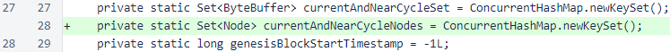
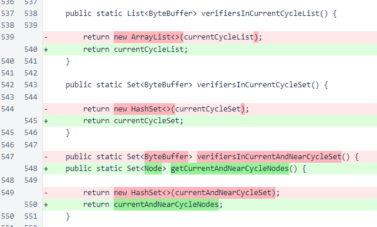
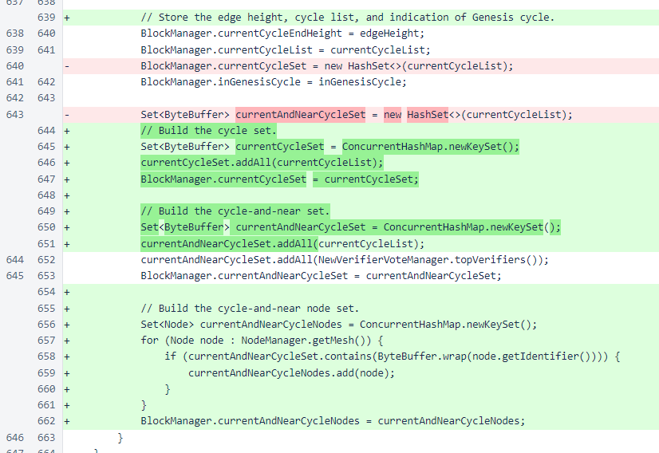
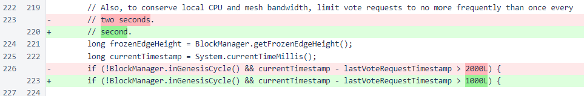
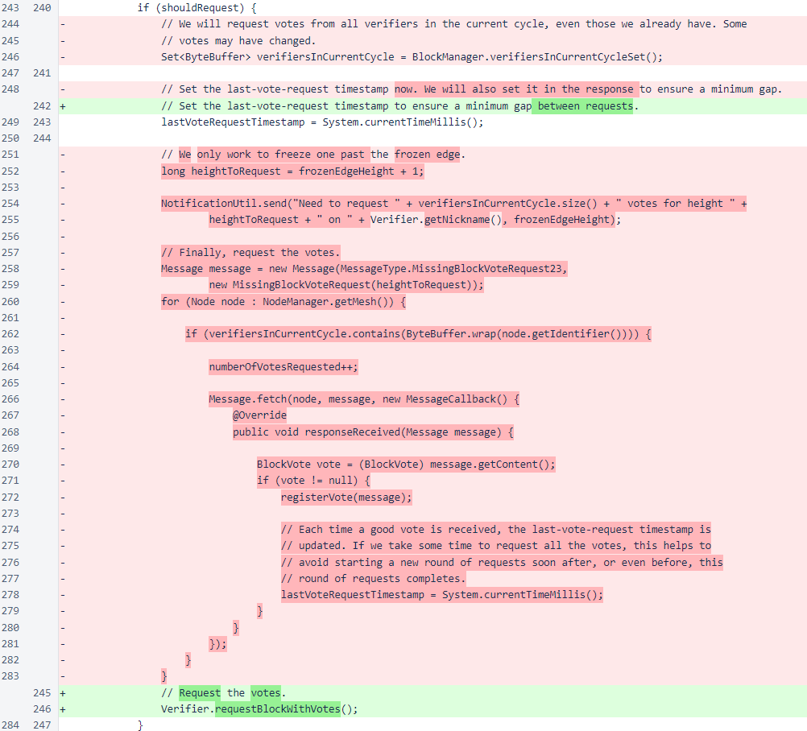
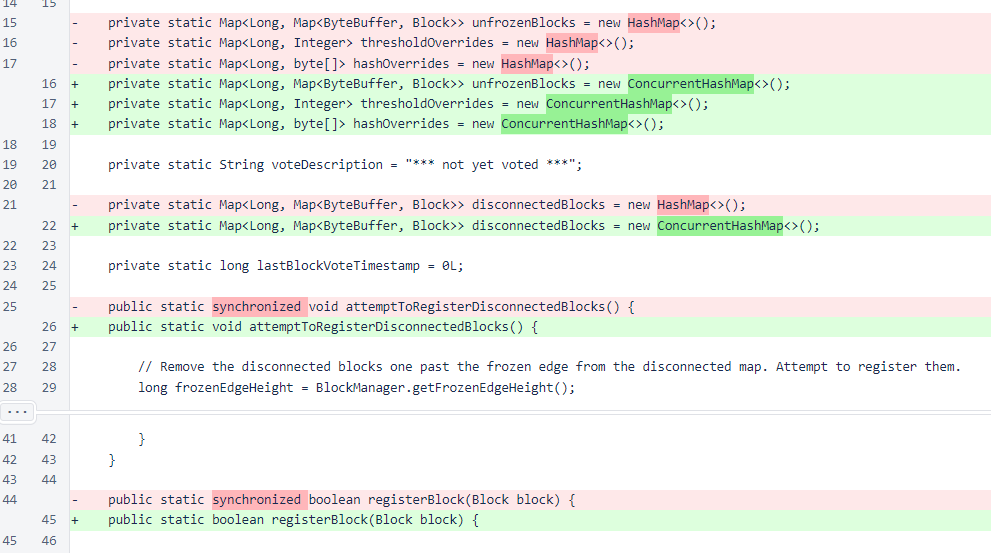
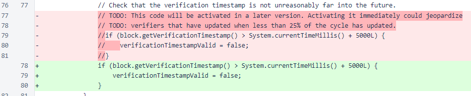
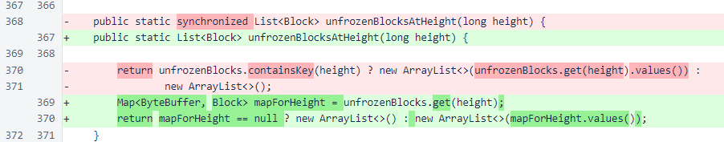
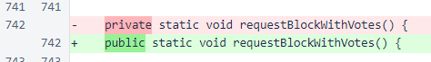
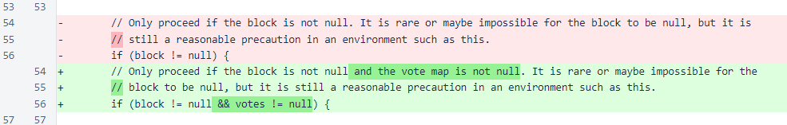

Nyzo version 515 (commit on GitHub) improves performance of the verifier and reduces the time required to resynchronize with the blockchain after a verifier outage.
This version primarily affects the verifier. While some of the modified code paths are used by the sentinel, this version does not affect operation of the sentinel significantly.
In BlockManager, a set containing all current- and near-cycle Node objects has been added.
The methods for retrieving in-cycle identifiers have been changed to return a reference to the local object instead of a copy of that object. While this does expose the local objects to modification by other classes, it eliminates the processing and memory overhead related to the copy. The method that returned the set of all current- and near-cycle identifiers has been replaced by a method that returns the set of current- and near-cycle Node objects.
In the updateVerifiersInCurrentCycle() method, the identifier sets have been changed to use concurrent sets, and building of the set of Node objects has been added.
The minimum interval between requests for missing block votes has been changed from 2 seconds to 1 second to improve recovery speed after blockchain-tracking problems.
Request of missing block votes has been replaced with the block-with-votes request used by out-of-cycle verifiers. Request of individual missing votes requires one message to be sent to every verifier in the cycle. The bundled block-with-votes request requires only a single message.
In the Message class, the new set of current- and near-cycle nodes is now used for broadcasts. Instead of iterating over the entire mesh and checking each node for cycle membership, iteration now takes place over the cycle only.

In UnfrozenBlockManager, the static maps have been replaced with concurrent versions, and synchronization has been removed from all methods.
Rejection of future-timestamped blocks has been activated. The entire cycle has now adopted the code that penalizes such blocks with an invalid chain score, so there is no longer a danger that such a block will be frozen.
The UnfrozenBlocksAtHeight method has been rewritten to eliminate the possibility of a null-pointer exception due to a race condition.
In the Verifier class, visibility of requestBlockWithVotes has been modified to allow the BlockVoteManager class to use it to request missing votes.
In VerifierPerformanceManager, an additional null check has been implemented. Review of log files showed that the vote map was sometimes null, resulting in an exception.
